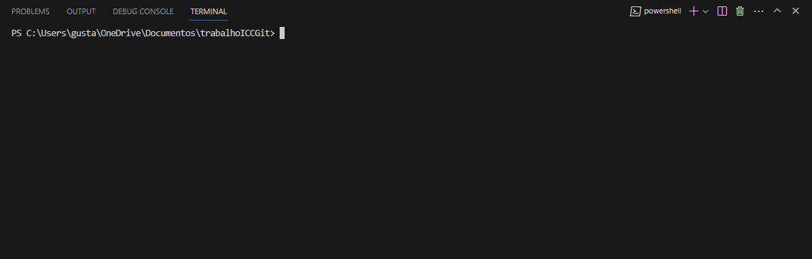

O que é Git e qual é a sua relação
com GitHub?
com GitHub?

Git é um sistema de controle de versão distribuído e amplamente adotado, criado em 2005 por Linus Torvalds, o famoso criador do kernel do sistema operacional Linux. É um projeto de código aberto maduro e com manutenção ativa, e muitos projetos de software dependem do Git para controle de versão, incluindo projetos comerciais e de código-fonte aberto. Com o Git, a cópia de trabalho de todo desenvolvedor do código também é um repositório que pode conter o histórico completo de todas as alterações. Além de ser distribuído, o Git foi projetado com desempenho, segurança e flexibilidade em mente.

GitHub é uma plataforma baseada em nuvem que hospeda repositórios Git e facilita a colaboração e o gerenciamento de projetos compartilhados. É uma empresa com fins lucrativos que disponibiliza um serviço baseado em nuvem. Em resumo, enquanto o Git é um sistema de controle de versão distribuído, o GitHub é uma plataforma que hospeda repositórios Git e permite que programadores e outros usuários colaborem e façam mudanças em projetos compartilhados.
Como configurar seu repositório no GitHub
-
Crie uma conta no GitHub: Para começar, você precisará criar uma conta no GitHub. Acesse GitHub.com e clique em “Sign up” (Inscreva-se) para criar uma conta. Siga as instruções na tela para concluir o processo de inscrição.
-
Crie um novo repositório: Depois de fazer login em sua conta do GitHub, você pode criar um novo repositório clicando no botão “New repository” (Novo repositório) na página inicial. Dê um nome ao seu repositório e adicione uma descrição (opcional). Você também pode escolher se deseja tornar o repositório público (acessível a todos) ou privado (acessível apenas a você e a pessoas que você convidar). Quando terminar, clique em “Create repository” (Criar repositório).
-
Clone o repositório: Para fazer alterações no código do seu repositório, você precisará cloná-lo para o seu computador local. Isso criará uma cópia do repositório em seu computador, permitindo que você faça alterações no código. Para clonar o repositório, abra um terminal ou prompt de comando e navegue até o diretório onde deseja armazenar o repositório. Em seguida, execute o comando
git cloneseguido do URL do repositório. Por exemplo:git clone https://github.com/seu-usuario/seu-repositorio.git -
Faça alterações no código: Depois de clonar o repositório, você pode fazer alterações no código usando o editor de código de sua escolha. Quando terminar de fazer as alterações, salve os arquivos.
-
Envie as alterações para o GitHub: Depois de fazer as alterações no código, você precisará enviá-las de volta para o GitHub para que elas sejam salvas no repositório remoto. Para fazer isso, abra um terminal ou prompt de comando e navegue até o diretório do repositório clonado. Em seguida, execute os seguintes comandos:
git add .git commit -m "Sua mensagem de commit aqui"git pushIsso adicionará todas as alterações feitas aos arquivos (
git add .), criará um novo commit com uma mensagem descritiva (git commit -m "Sua mensagem de commit aqui") e enviará as alterações para o GitHub (git push).
Agora você pode acessar o seu repositório no GitHub. Para fazer alterações no código, você pode clonar o repositório para o seu computador local usando o comando git clone seguido do URL do repositório. Depois de fazer as alterações, você pode enviar as alterações de volta para o GitHub usando os comandos git add, git commit e git push. E poderá fazer muito mais utilizando os comandos abaixo.
Principais comandos do Git
Init:

|
Clone: |
Branch:
|
Checkout: |